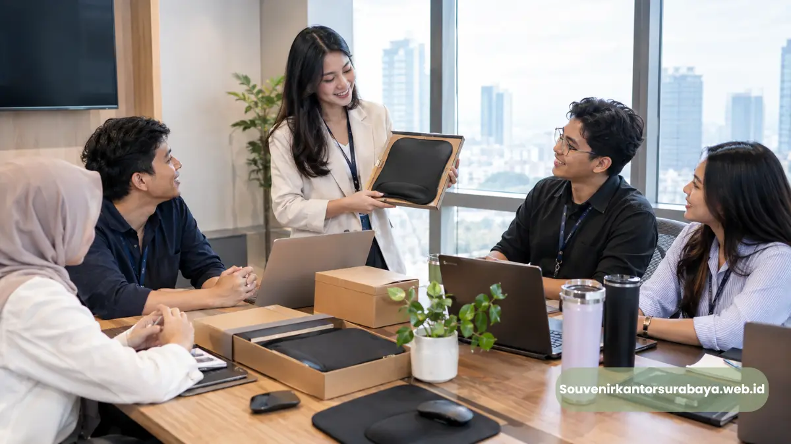

- Mengapa Mouse Pad Ergonomis Layak Dipertimbangkan sebagai Souvenir Kantor?
- Bagaimana Custom Logo Membuat Mouse Pad Menjadi Merchandise Perusahaan?
- Apa Saja Kriteria Mouse Pad untuk Kebutuhan Perusahaan?
- Varian Mouse Pad Mana yang Sesuai untuk Employee Gift?
- Bagaimana Mouse Pad Custom Logo Mendukung Citra Perusahaan?
- Bagaimana Mouse Pad Dapat Digunakan dalam Program HRD?
- Bagaimana Data Penggunaan Internet Relevan dengan Aksesori Kerja?
- Bagaimana Perusahaan di Malang Dapat Menyiapkan Pesanan?
- Bagaimana Mouse Pad Dapat Dipadukan dengan Souvenir Korporat Lain?
- Konsultasikan Mouse Pad Custom Logo untuk Kantor Malang
Mouse pad ergonomis custom logo untuk kantor di Malang memadukan aksesori meja kerja dengan identitas perusahaan untuk employee gift, merchandise, dan corporate gifting.
- Mouse pad merupakan aksesori yang relevan untuk workstation berbasis komputer.
- Desain ergonomis dapat memasukkan wrist support atau karakteristik yang mendukung kenyamanan.
- Custom logo membuat produk terhubung dengan brand identity perusahaan.
- Produk dapat diberikan kepada karyawan, peserta pelatihan, klien, dan relasi bisnis.
- Kebutuhan desain, jumlah, kemasan, dan distribusi dapat dibahas bersama tim penyedia souvenir.
Mengapa Mouse Pad Ergonomis Layak Dipertimbangkan sebagai Souvenir Kantor?
Mouse pad ergonomis layak dipertimbangkan karena fungsional untuk workstation dan dapat dipersonalisasi menjadi souvenir kantor yang sesuai kebutuhan corporate.
Ketika staf HRD menyusun employee gift tahunan, salah satu pertanyaan penting adalah apakah produk benar-benar akan digunakan. Aksesori meja kerja memiliki hubungan langsung dengan rutinitas pekerjaan bagi pengguna yang bekerja dengan komputer.
Mouse pad ergonomis dapat memiliki bentuk yang memberikan dukungan tambahan pada telapak atau pergelangan. Namun, kenyamanan tetap bergantung pada pengguna dan konfigurasi workstation.
Bagaimana Custom Logo Membuat Mouse Pad Menjadi Merchandise Perusahaan?
Custom logo menjadikan mouse pad sebagai merchandise perusahaan dengan memasukkan identitas visual ke produk yang digunakan dalam aktivitas kerja sehari-hari.
Logo perusahaan dapat ditempatkan pada bagian sudut, area tengah, atau area khusus sesuai desain. Warna korporat dapat digunakan sebagai aksen atau elemen utama.
Untuk employee gift, desain minimalis lebih fleksibel karena dapat digunakan dalam berbagai suasana kerja. Produk juga dapat dipadukan dengan gift set kantor.
Baca Juga
Apa Saja Kriteria Mouse Pad untuk Kebutuhan Perusahaan?
Kriteria utama meliputi ukuran, material, permukaan, kestabilan alas, fitur wrist support, kualitas finishing, dan kemampuan menerima custom logo.
Ukuran harus sesuai dengan ruang meja. Permukaan harus sesuai dengan karakter penggunaan mouse. Alas antiselip membantu menjaga produk tetap pada posisi yang diinginkan.
Wrist support dapat menjadi fitur tambahan. OSHA menyarankan wrist atau palm rest yang digunakan dengan benar untuk membantu mempertahankan posisi pergelangan lebih netral.
Varian Mouse Pad Mana yang Sesuai untuk Employee Gift?
Employee gift dapat menggunakan mouse pad standar, wrist-rest mouse pad, extended mouse pad, atau paket mouse pad dengan produk kantor pendukung.
Mouse pad standar merupakan pilihan praktis untuk kebutuhan merchandise dengan jumlah penerima banyak. Mouse pad ergonomis dengan wrist support lebih cocok untuk program employee gift yang mengutamakan aksesori workstation.
Extended mouse pad cocok untuk pengguna dengan area meja luas. Mouse pad dalam gift set dapat dipadukan dengan notebook, pulpen, tumbler, atau kartu ucapan.
Bagaimana Mouse Pad Custom Logo Mendukung Citra Perusahaan?
Mouse pad custom logo membantu menjaga konsistensi identitas visual perusahaan melalui produk fungsional yang hadir di area kerja penerima.
Branding perusahaan tidak hanya berkaitan dengan ukuran logo. Konsistensi warna, proporsi, kualitas produk, dan konteks penggunaan juga penting.
Untuk souvenir korporat elegan, logo dapat dibuat lebih kecil dan dipadukan dengan warna netral. Untuk merchandise event, identitas acara dapat dibuat lebih dominan.

Bagaimana Mouse Pad Dapat Digunakan dalam Program HRD?
HRD dapat menggunakan mouse pad sebagai employee gift untuk onboarding, pelatihan, penghargaan, anniversary, gathering, atau program internal perusahaan.
Untuk onboarding, mouse pad dapat menjadi bagian dari workstation starter kit. Untuk training, mouse pad dapat dimasukkan dalam paket peserta bersama notebook dan pulpen.
Untuk anniversary, desain dapat menggunakan identitas khusus tahun perayaan. Untuk penghargaan internal, mouse pad dapat dipadukan dengan produk lain agar membentuk paket apresiasi.
Bagaimana Data Penggunaan Internet Relevan dengan Aksesori Kerja?
Data penggunaan internet menunjukkan aktivitas digital yang luas, tetapi tidak secara langsung mengukur kebutuhan mouse pad sehingga keputusan merchandise harus mengikuti karakter pekerjaan.
BPS mencatat pada 2024 sebanyak 99,08 persen penduduk Indonesia yang mengakses internet menggunakan telepon seluler, sedangkan 10,12 persen menggunakan laptop dan 2,62 persen menggunakan komputer. Angka tersebut bukan statistik workstation perusahaan.
Untuk kebutuhan corporate gifting, perusahaan sebaiknya menggunakan data internal seperti jenis pekerjaan, jumlah karyawan, dan aktivitas workstation untuk menentukan relevansi mouse pad.
Bagaimana Perusahaan di Malang Dapat Menyiapkan Pesanan?
Perusahaan dapat menyiapkan pesanan dengan menentukan jumlah, model, ukuran, desain logo, warna, kemasan, penerima, dan jadwal kebutuhan sejak awal.
Melayani kebutuhan perusahaan di Malang dapat dilakukan dengan brief yang terstruktur. Informasi yang sebaiknya disiapkan meliputi jumlah penerima, tujuan pemberian, jenis mouse pad, ukuran, material, fitur wrist support, logo, warna korporat, kemasan, jadwal penggunaan, dan distribusi.
Semakin jelas brief, semakin mudah produk disesuaikan dengan kebutuhan acara atau program perusahaan.
Bagaimana Mouse Pad Dapat Dipadukan dengan Souvenir Korporat Lain?
Mouse pad dapat dipadukan dengan notebook, tumbler, pulpen, pouch, tote bag, atau kartu ucapan untuk membentuk gift set kantor yang lebih lengkap.
Untuk employee gift, kombinasi produk dapat dibuat fungsional. Untuk hadiah relasi bisnis, kemasan dapat dibuat lebih formal.
Contoh paket dapat berupa Paket Workstation dengan mouse pad, notebook, pulpen, dan tumbler; Paket Onboarding dengan mouse pad, notebook, stationery, pouch, dan kartu ucapan; atau Paket Corporate Gift dengan mouse pad, notebook hardcover, tumbler, metal pen, dan premium gift box.
Konsultasikan Mouse Pad Custom Logo untuk Kantor Malang
Perusahaan dapat mengonsultasikan kebutuhan mouse pad berdasarkan jumlah penerima, desain, fungsi workstation, dan konsep corporate gifting sebelum menentukan spesifikasi produksi.
Untuk kebutuhan souvenir kantor, employee gift, atau merchandise perusahaan, kunjungi SouvenirKantorSurabaya.web.id dan sampaikan kebutuhan mouse pad ergonomis custom logo untuk kantor di Malang.
Tim dapat membantu membahas pilihan produk berdasarkan kebutuhan acara atau souvenir tahunan perusahaan, termasuk konsep desain, jumlah, spesifikasi, dan kemasan.

Hawa Nadira
Tim penulis CorporateGifts ID berfokus pada strategi souvenir kantor, merchandise korporat, dan inovasi brand untuk klien B2B.
Keahlian: Branding perusahaan, produksi souvenir, paket event, desain materi promosi.
Artikel Terkait

Souvenir Kantor Corporate untuk Perusahaan Malang
Souvenir kantor corporate untuk perusahaan Malang dengan pilihan custom logo, gift set, dan employee gift untuk kebutuhan branding.
Baca Selengkapnya
Mouse Pad Ergonomis Custom Logo Yogyakarta
Mouse pad ergonomis custom logo untuk kantor di Yogyakarta, cocok sebagai employee gift, merchandise meja kerja, dan branding perusahaan.
Baca Selengkapnya
Mouse Pad Ergonomis Custom Logo Semarang
Mouse pad ergonomis custom logo untuk kantor di Semarang sebagai aksesori meja kerja, employee gift, dan media branding perusahaan.
Baca Selengkapnya